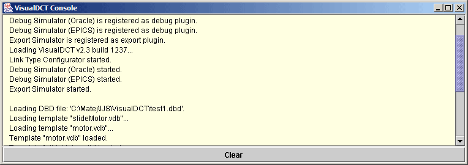

| VisualDCT User's Manual | |
|---|---|
| Project: | VisualDCT |
| Classification: | User's Manual |
| Identification: | CSL-MAN-02-xxxxxx |
| Copyright © 2002 by Cosylab Ltd. All Rights Reserved. | |
| Revision | Date | Author | Section | Modification |
|---|---|---|---|---|
| 1.0 | 2002-10-19 | Matej Sekoranja | ||
| all | Created. | |||
| 1.1 | 2002-10-22 | Matej Sekoranja | Released | |
| 1.2 | 2003-07-18 | Matej Sekoranja | ||
| all | Updated hierarchy related sections of manual. | |||
| 1.3 | 2004-07-26 | ilist | ||
| all | Added section about command line tool for generating flat databases. | |||
| 1.4 | 2004-11-16 | Matej Sekoranja | ||
| all | Added details on VDCT configuration to running section. | |||
| 1.5 | 2005-08-21 | Matej Sekoranja | ||
| all | Added descriptions on new VDCT features. | |||
This document is classified as a public document. Redistribution and use, with or without modification, are permitted provided that:
| ID | Author | Reference | Revision | Date | Publisher |
|---|---|---|---|---|---|
| 1 | Matej Sekoranja | VisualDCT Project | 2003 | Cosylab, Ltd. | |
| 2 | Matej Sekoranja | VisualDCT latest build | 2.5.1263 | 2004 | Cosylab, Ltd. |
| 3 | Matej Sekoranja | Java Installation and Build Process of VisualDCT | 2002 | Cosylab, Ltd. | |
| 4 | Matej Sekoranja | VisualDCT EPICS Databases Hierarchy Support | 2002 | Cosylab, Ltd. | |
| 5 | Matej Sekoranja | VisualDCT Hierarchy Additions | 2003 | Cosylab, Ltd. | |
| 6 | Sunil Sah | VisualDCT Plugins | 2002 | Cosylab, Ltd. |
This document's meta-information (authors, revision history, table of contents, ...) can be found above. What follows below is the body of the document. The body is composed of several sections, which may be further composed of subsections.
Typographical styles are used to denote entities of different kinds. For a full list of entities and their respective typographic conventions, please refer to the Styles section of the XML Documentation document.
When viewing the document in a non-printed form, it is possible to submit comments regarding a given section to the document's owner. This is achieved by clicking the mail icon next to the section title. For this to work, your mail must be configured to properly handle the mailto URLs.
Visual Database Configuration Tool (VisualDCT) is an EPICS database configuration tool completely written in Java
and therefore supported in various systems. It was developed to provide features missing in existing configuration tools
as Capfast and Graphical Database Configuration Tool (GDCT). Visually VisualDCT resembles GDCT; records can be created,
moved and linked, fields and links can be easily modified. But VisualDCT offers more: using hierarchical design od DBs and groups,
records can be grouped together in a logical block. Additionally indication of data flow direction using arrows makes the design
easier to understand. VisualDCT has a powerful DB parser, which allows importing existing DB and DBD files.
Output file is also DB file, all comments and record order is preserved and visual data saved as comment,
which allows DBs to be edited in other tools or manually.
This manual describes the VisualDCT version 2.4 build 1244.
VisualDCT is designed to create and maintain EPICS record instance database (.db) files. In order for VisualDCT to execute properly, a database definition (.dbd) file has to be provided which contains the specifications for the various record and device types that they intend to reference in any record instance database (.db) file to be created by VisualDCT. Once a database definition (.dbd) file has been specified, records can be created, copied, renamed, etc. using the various facilities provided by the VisualDCT. As the user interacts with the various VisualDCT windows, selections, and data entry fields, the results of these interactions are displayed on the screen. Revisions and data entry updates of record instance data displayed on the screen do not replace previously stored record instance data until the user saves currently modified record instance database (.db) file. As VisualDCT executes, it attempts to trap and display the most common situations that might lead to diminishing the integrity of the user supplied information.
In order to run VisualDCT, Java Runtime Environment 1.4 is required.
VisualDCT is distributed as a Java ARchive package (.jar file),
so there is only one file in the binary distribution.
This file has to be added to the java classpath variable
(search path for application classes and resources) to help JVM find com.cosylab.vdct.VisualDCT class,
which is the main class of the VisualDCT.
Usage of VisualDCT:
java -cp VisualDCT.jar com.cosylab.vdct.VisualDCT [* or *]
Listing 1: Basic run command.
VisualDCT Java ARchive package (.jar file) is so called executable JAR file, which means it can be run as:
java -jar VisualDCT.jar [* or *]
Listing 2: Running executable JAR.
or if you GUI has this feature double-click on VisualDCT.jar will also do it. VisualDCT accepts two parameters which are not obligatory: database definition files and record instance database files (if this is already specified in DBs, specification of database definition file is not needed). DBD is recognised as a file with .dbd extension otherwise DB is assumed. If there is no DBDs specified an Open dialog will appear allowing you to specify DBD file. If even then there is no valid DBD specified VisualDCT will exit with the following output:
o) No DBD loaded! Exiting...
Listing 3: No DBD loaded error message.
An example of running VisualDCT, using test.dbd definition database and test.db instance database file:
java -jar VisualDCT.jar -DVDCT_DIR=~/epics test.dbd test.db
Listing 4: An example of running VisualDCT.
VDCT_DIR environment variable is used to define the default working directory.
VisualDCT als supports EPICS_DB_INCLUDE_PATH environment variable, which adds a additional
search path for DB files used in the hierarchy so you can store useful modules in a central location.
java -jar VisualDCT.jar -DEPICS_DB_INCLUDE_PATH=$EPICS_DB_INCLUDE_PATH test.dbd test.db
Listing 5: An example of EPICS_DB_INCLUDE_PATH environment variable usage.
For saving configuration data Java Preferences API is used. This means configuration is kept in a system depended configuration storage, e.g. registry when using Windows OS, ~/.java (user) and /etc/java (system) on UNIX/Linux systems..
VisualDCT searches for plugins configuration in users home directory. If there is none, it looks into the
VDCT_CONFIG_DIR directory, where VDCT_CONFIG_DIR is an environment variable is used to define the default plugins configuration directory.
Default value of VDCT_CONFIG_DIR is
java -jar VisualDCT.jar -DVDCT_CONFIG_DIR=/users/devl/config/vdct test.dbd test.db
Listing 6: An example of overriding default plugins configuration directory.
You can generate flat databases also from command line, which is useful for generation from scripts or generating large databases. Same as for VisualDCT, Java Runtime Environment 1.4 is required, but the difference is you can use it on a headless terminal. To start the generation you have to add VisualDCT's jar to classpath and invoke a specific class (com.cosylab.vdct.GenerateFlatDatabase), which takes care of the generation. This command line tool basically takes two parameters: the input .vdb file (probably your main file), which is used together with all the .vdb files included as templates and the output .db file, to which the flat database is generated.
java -cp VisualDCT.jar com.cosylab.vdct.GenerateFlatDatabase [OPTION]... input.vdb output.db
Listing 7: Generating flat databases.
We also provided a script for running this tool, named flatdb, which can be found next to the distribution of VisualDCT.
flatdb [OPTION]... input.vdb output.db
Listing 8: Running with a script.
Additionaly you can specify command line option -d or --dbd-file, followed by the name of a .dbd file. This loads a specific .dbd file before generating a flat database.
flatdb --dbd-file app.dbd input.vdb output.db
Listing 9: Example with a .dbd file.
Options --enable-global-macros and --disable-global-macros respectively enable and disable global macro evaluation.
Options --enable-capfast and --disable-capfast enable and disable production of hierarhical names like CapFast.
Both of the above command line options when not specified on the command line, use the same settings as were made in VisualDCT's visual user interface (settings are automatically saved).
VisualDCT also supports hierarchical design of EPICS databases. For detailed information about it refer to VisualDCT EPICS Databases Hierarchy Support and VisualDCT Hierarchy Additions documents.
VisualDCT can be considered as a rapid database development tool - unintuitive database construction using ordinary text editors can be done quickly with a few simple mouse-clicks minimizing all unnecessary keyboard input. Visualization of the record instance database makes databases easier to understand, errors are much easier to find (e.g. broken links are indicated by a red cross) and helps find a better design of the databases. Allowing user to user hierarchal design and split databases into logical blocks.
VisualDCT creates and maintains only one file, the record instance database (.db or .vdb) file, and does not have any additional graphical information file avoiding any possible consistency problems when having multiple files, all necessary visual composition data is stored as comments at the end of the DB file. An example of DB file:
#! Generated by VisualDCT v2.3
#! DBDSTART
#! DBD("/home/matej/epics/test1.dbd")
#! DBDEND
path ":/home/matej"
addpath "epics:epics/templates"
include "dummy.db"
# This is an record comment...
record(calc, error) {
field(INPA, "$(slmot1.position)")
}
record(ao, speed) {
field(DTYP, "Soft Channel")
field(OUT, "$(slmot1.speed)")
field(HIHI, "1208")
}
# This is an expand comment...
expand("slideMotor.vdb", slmot1) {
macro(name, "sm1")
macro(address, "4")
macro(demand, "slide1:demand.VAL")
}
#! Further lines contain data used by VisualDCT
#! TemplateInstance("slmot1",100,340,0,"")
#! Record(error,640,20,0,0,"error")
#! Field("error.INPA",16777215,0,"error.INPA")
#! Link("error.INPA","error/INPA")
#! Connector("error/INPA","$(slmot1.position)",417,117,16777215,"",0)
#! Record(speed,720,500,0,0,"speed")
#! Field("speed.OUT",16777215,0,"speed.OUT")
#! Link("speed.OUT","speed/OUT")
#! Connector("speed/OUT","$(slmot1.speed)",617,577,16777215,"",0)
Listing 10: An example of complete DB file.
VisualDCT has powerful parser which has ability to parse already existing DBs, files which have been created or modified with other tool. It also detects syntax errors in databases, including DBDs. Defective visual composition data or its absence are safely handled and do not raise any critical error, VisualDCT simply automatically layouts all objects without any visual data. What is more, VisualDCT preserves comments and record/field order in the record instance database, which offers the ability to edit your databases in other tools or manually without making any harm to the databases and VisualDCT.
Figure 1: Record
Record is represented as a write square with its type and name written inside.
Below the line inside the record there is an area where all fields values are shown, selection of fields depends on its visibility property.
There are three types of fields that can appear as part of the record (white squares below the record):
VARIABLE (data), INPUT, OUTPUT and FORWARD fields.
Variable fields hold a piece of data, such as the VAL or HIHI fields.
Since the variable fields can be populated by other record's output fields and read by other
record's input fields, a field node will appear below the record.
Additionally indication of data flow direction using arrows makes fields easy to distinguish:
A multi-point wire can be drawn between any two linkable fields simply by adding connectors (moveable small squares on a link line). If a link is an inter-group link (link between two fields which are not in the same group), the link is represented as a line going in the screen with the target link name shown by side. Wherever VisualDCT detects there is a possiblity of two wire to merge, it indicates this by drawing a small dot on the wire (at the possible point of merging).
Figure 2: Group
Group is represented as a white square with its name inside. Double click over it descends into it.
Figure 3: Template Instance
Template instance is represented as a larger write square. It its body it contains: name (id) at right at the top, template description below, template ports (values to be passed out of the template) and template macors (macro definitions to be passed inside the template).
Those template fields can be reordered just by dragging them, but default (and recommended) order implies input fields on the left and output fields on the right side.
To change template instance properties double click over it and use Inspector tool or Shift + double click to descent into it.
Figure 4: Links
VisualDCT distinguish several link types:
Figure 5: Line/arrow, box and textbox (plain and HTML)
There are two ways of linking:
[Matej Sekoranja] VisualDCT uses the following rule: linking destintation is the object which value contains target name, e.g. ao001.INP (source) field contains "ao002.VAL" value (target).
VisualDCT has a capability to morph (change) record and template types, i.e. to change type and preserving all common fields. Command is accessible via - menu or pop-up (context) menu.
VisualDCT supports custom defined borders (just like the borders around mechanical and
electrical engineering drawings) which have author, id, name and change
blocks. They consist of lines, rectangles and text blocks, but no
records. Once merged, the block remains as a single block with text editable.
Borders are defined as a ordinary DB file using box, textbox and line objects.
Once this DB file is imported into other DB using - all
graphics objects are imported as single block with textbox editable.
Grouping is based on the naming,
for instance record with name grp1:ao001 belongs to group grp1 and record grp1:grp2:ao002
belongs to group grp2 which belongs to grp1, so groups can be also nested.
In previous examples : character was used as a grouping separator, which is the default,
but it can be easily changed in Settings window (-).
Double click on the group descends into the group and shows only the records and groups in this group, use - ( Shift + Up ) to ascend from the group.
Grouping can be easily achieved on the naming basis, simply by renaming records, or using in the or commands from the menu on the object selection.
As every powerful IDE also VisualDCT provides indispensable facilities as clipboard and undo support. A great effort was given to synchronization between the record instance database and its visualization. Every change done visually is immediately reflected in the database and vice versa; all actions like moving, renaming and deletion of records which affect links are automatically fixed by the VisualDCT.
Graphical User Interface of the VisualDCT consists of 3 main windows:
Figure 6: Main window
The main window consists of:
Figure 7: Inspector window
The inspector tool provides a capability of inspecting (examining) and modifying of all objects properties.
Basically the inspector tool is already all needed to edit record instance databases - it replaces ordinary text editor.
The inspector window consists of:
Each field has additional property called visibility, whether the field value is shown inside the record body (see Record representation). It can be changed by clicking right mouse button over left column. Tree icons indicate the visibility state of the field:
A macro definition can be entered for any field, including menus and links. Any changes to fields take place immediately in the visual composition.

Figure 8: Console window
Console window is used to replace standard output of the JVM, which is often ignored by the user. All output is redirected to the console which pops up every time a new message appears in it and so informs user about the new message.
This section describes all commands available by the VisualDCT.
This section describes menu commands available by the VisualDCT.
| Button | Trigger | Actor | Action |
|---|---|---|---|
| left | click | record, group, template | Select object |
| double-click | group | Descend into group | |
| field, record, template | Inspect object | ||
| connector | Find target | ||
| blank workspace | Create new record | ||
| Shift + double-click | template | Descend into template | |
| click, drag | record, group, template / selection | Move object / selection | |
| navigator | Move through the workspace | ||
| Shift + drag | blank workspace | ||
| drag | blank workspace | Select record, groups, templates | |
| right | click | object, blank workspace | Popup object specific menu |
| left navigator column of a field | Change field visibility | ||
| Shift + click | field with more than one link or template field | Rotate link | |
| drag | blank workspace | Zoom in selection | |
| Shift + move + Zoom < 100% | any visible object | Blow up the object to 100% |
Table 1: Mouse command reference
Among all visually documented (on the left side of menu items) combinations there is one additional combination:
Figure 9: Plugin Manager window
To make VisualDCT more flexsible support for plugins was implemented. For detailed information about plugins refer to VisualDCT Plugins document.
Since VisualDCT is an active project, there are some features to be implemented in the future releases of VisualDCT and all bug reports, suggestions and ideas are very appriciated.
If this manual did not meet all of your expectations or if you have any questions or suggestions,
please feel free to contact the author.
Enjoy using VisualDCT.
 |